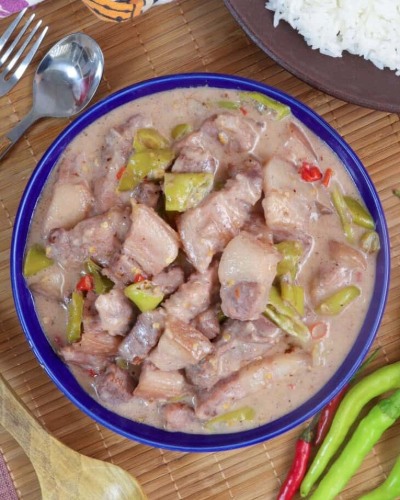

Bicol Express

Description
Bicol Express is pure comfort food! With pork cubes cooked in coconut milk and chili peppers,
it's rich, creamy, spicy and delicious. Serve with steamed rice for a hearty and big flavored meal!
Ingredients
- 1 tablespoon canola oil
- 1 onion, peeled and sliced thinly
- 4 cloves garlic, peeled and minced
- 2 pounds pork belly, cut into 1-inch cubes
- 2 tablespoons fresh shrimp paste
- 1 can (13.5 ounces) coconut milk
- 1 cup water
- 14 pieces Thai chili peppers, stemmed and minced
- 2 cups finger chilies (siling haba), sliced
- 1 cup coconut cream
- salt and pepper to taste
Steps
- In a wide pot over medium heat, heat oil. Add onions and garlic and cook, stirring occasionally, until softened.
- Add pork and cook, stirring occasionally, until lightly browned.
- Add shrimp paste and cook, stirring occasionally, for about 1 to 2 minutes.
- Add coconut milk, water, and chili peppers. Bring to a simmer and cook for about 35 to 35 minutes or until pork is tender and liquid is reduced and begins to render fat.
- Add finger chilies and cook, stirring regularly, for about 1 to 2 minutes.
- Add coconut cream and continue to simmer until thickened and begins to render fat.
- Season with salt and pepper to taste. Serve hot.
Notes
- To make slicing easier, freeze the pork belly until partially firm.
- Coconut milk tends to curdle or separate when brought to a boil or heated too quickly. Cook in a gentle simmer to ensure a smooth, creamy sauce..
- If you'd like to add vegetables, you can use cut sigarilyas, long beans (sitaw) or string beans.
- If you're in the U.S. and have only access to the bottled "neon pink" shrimp paste, you might want to rinse it and drain well before using
in the recipe to rid of the extra saltiness and the bright color that might otherwise bleed into the dish.